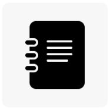

My Useful Links

Tutorial 1
Tutorial
This is a link to my first tutorial,where I Practiced basic html & CSS.
Tutorial 2
This is a link to my SECOND tutorial,where I Practiced with Lists and Tables.
University Work
Blackboard
The VLE we use at University.
Timetabling
This is a link to my SECOND tutorial,where I Practiced with Lists and Tables.
Web Dev Shedule
A link to my Web Design and Development module schedule,from which i can access all m lectures and tutorials,and check deadline dates.
Student Hub
The student bHub is the University Web site for current students which provides information such as new and events, and links to all the University Web systems and services
Web Stuff
MDN Web Docs
Online resources for Web Development developed by the Mozila Developer Network
W3C
World Wide Web Consortium,which amongst pther things develops the various Web standards.
Social Media
Twitter
Link to Twitter,an online microblogging site which I use to follow what's happening in web developer world.
Facebook
To keep in touch with family and friends.
Instagram
For posting pictures about my life.
Back To The Top
Last modified: date
Email: Supun Devendra